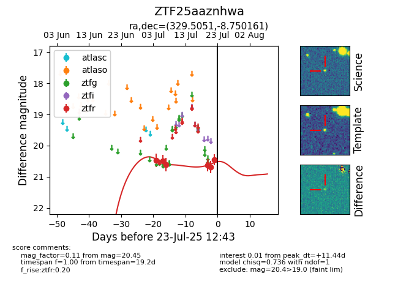

Target ZTF25aaznhwa at 2025-07-23 11:52, see:
FINK: fink-portal.org/ZTF25aaznhwa
Lasair: lasair-ztf.lsst.ac.uk/objects/ZTF25aaznhwa
ALeRCE: alerce.online/object/ZTF25aaznhwa
alt names
ZTF25aaznhwa (ztf,fink)
coordinates:
equatorial (ra, dec) = (329.5051,-8.75016)
galactic (l, b) = (48.7558,-45.15074)
photometry
last ztfr=20.45
6 ztfr detections
